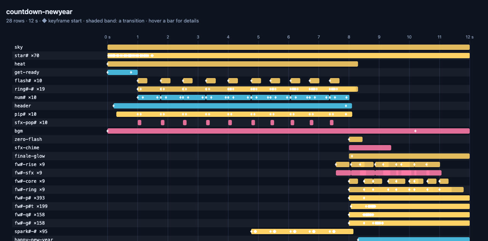

Reviewing your video
See what you made without playing it, scrub it against a timeline, and check the sound you cannot hear.
A video is hard to judge from code, so pixi-effects ships ways to look at it. They matter most when an AI wrote the video, but they are just as useful for yours.
One command: check#
npx pixi-effects check my-video.htmlIt opens your page in a private headless Chrome and reports, in one go:
- warnings the library printed (every one says what to change);
- layout problems found by
movie.inspectover the whole timeline: text off the canvas, cut by an edge, empty, or overlapping other text (overlaps are listed for you to look at, since they are often on purpose); - sound:
movie.inspectAudio(): the loudness of the mix (LUFS, true peak, clipping, silence, scene by scene), advice and a list of problems;waveform.pngdraws the mix with the scene edges and when each sound starts; - fonts: a web font whose file did not load fails the check; a text layer none of whose fonts is installed is listed for review (it is drawn in a fallback font);
- a real export, decoded again: its size, length and loudness per second;
- a contact sheet (
sheet.png, twelve labelled frames), the video's poster (poster.jpg) and a timeline (timeline.html) to open; - for a presentation (a movie with
stops):stops.png, one picture for every stop in order, and the number of stops and pages. The picture at a stop is what the audience looks at while it waits, so check each one. The check also lists any stop where the picture is still changing (a stop that lands before its animation has ended);--strictmakes that a failure.
Options worth knowing while you work:
| Option | What it does |
|---|---|
--no-export |
skips the real export: a check takes a few seconds instead of the length of the video |
--at 3.5,title@end,50%,f120 |
writes the pictures at those moments (frames/*.png) and one sheet (at.png); name@start, name@mid and name@end are a named layer's start, middle and last frame |
--onion 1:3 |
onion.png: eight frames of seconds 1 to 3 laid over one another, the later the stronger, so a movement leaves a trail (its path and its easing) |
--draft |
the export is half size, low quality, no motion blur: a much smaller file (the drawing is not faster) |
--query "name=Aiko" |
adds to the page address, for a page that reads it (see the cookbook's batch recipe) |
check looks at the first and last frame of every scene (a named top-level composition of a second or more) and a frame every 0.25 s, up to 240 frames, so a title cut off at the edge of a scene is not missed. The mix is judged by ITU-R BS.1770 loudness: web video is typically −14 to −16 LUFS; quieter or louder than −24 or −9 LUFS, little headroom (true peak above −1 dBTP) and silent stretches are listed as notes, not failures; clipping, or a true peak above 0 dBTP (the file will distort), fails.
The exit code is 0 when there is nothing to fix and 1 otherwise, so it also works in CI. This is its real output for the title-card recipe of the Cookbook:
pixi-effects check — examples/_guide/title-card.html
page ready in 4.8 s · 1280×720 · 30 fps · 150 frames (5 s) · audio
loading assets 0 s · build 0.1 s · sound 0 s · frames 0 s
warnings none
layout no cut-off / off-canvas text over 21 frames (movie.inspect)
audio 1 source(s) · mix peak -12 dBFS · -24.4 LUFS · true peak -11.8 dBTP · no issues (movie.inspectAudio)
note the mix is quiet for web video: -24.4 LUFS (typical −14 to −16); raise the volume if that is not on purpose
note the mix is silent from 0.786 s to 5 s (4.2 s)
export mp4 ok · 113 KB · video 5.03 s 1280×720 · audio 5.033 s, peak -13 dBFS, rms/s [-31.6 -120 -120 -120 -120 -120]
files check-out/title-card/sheet.png check-out/title-card/poster.jpg check-out/title-card/timeline.html check-out/title-card/waveform.png check-out/title-card/title-card.mp4 check-out/title-card/report.json
RESULT: OK — nothing to fix. Look at the contact sheet before you call it done.The last line is on purpose: check cannot tell you whether a video is good, only that nothing is broken. Look at the contact sheet.

sheet.png: twelve labelled frames. The cheapest way to check a whole animation by eye.
See the timeline, and scrub it#
npx pixi-effects view my-video.htmlYour browser opens on the page with a timeline under it: every layer as a bar on a time axis, ◆ at each keyframe, a shaded band for each transition, and a red playhead that follows the movie.
- Click or drag on the timeline to seek; click a layer's name to jump to where it starts.
- Space plays, ← and → step a frame (Shift: a second), + and − (or Ctrl/⌘ and the wheel) zoom; the whole movie fits the width at the start, and the names stay in place while you scroll sideways.
- Layers whose names differ only by numbers (
ring1,ring2…) share one row, so a video with seven hundred generated layers is a screenful.
The same chart is available in code: movie.timelineChart() returns an HTML page, movie.timelineData() returns the rows, and movie.timelineSvg() returns just the chart.

The timeline of the countdown piece: 706 layers become 28 rows, because layers named ring10-0, ring9-1… share a row.
One movement in one picture#
await movie.onionSkin({ from: 1, to: 3, count: 8, as: 'dataURL' }) returns one image of the frames between two moments, laid over one another with the later ones stronger. A thing that moves leaves a trail: even steps mean constant speed, steps that bunch up mean slow, and what stays still stays itself. It is the quickest way to judge an easing.
In code#
| Call | Gives you |
|---|---|
await movie.inspect(frame) |
where every layer is drawn at that frame, and the layout problems |
movie.inspectAudio() |
each sound's time, loudness and pitch, and the problems |
await movie.contactSheet({ count: 12, as: 'dataURL' }) |
many frames on one labelled image |
await movie.snapshot(frame, { as: 'dataURL' }) |
one frame as an image |
await movie.contactSheet({ frames: movie.stops.map(s => s.frame), as: 'dataURL' }) |
one picture of every stop of a deck |
await stopImages(movie, { which: 'pages' }) |
every page of a deck as its own image (see Presenting) |
The warnings are instructions#
pixi-effects prints a console warning for almost every mistake: an unknown option (with a "did you mean"), a keyframe outside its layer, a text style typo, a mix that would clip. They are written to say what to change, so read them before anything else.